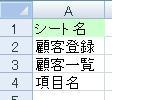

第5回.顧客登録のシートを作成(2)
エクセルで顧客管理を作ります、
前回の続きです、もう少し使えるマクロにします、
前回までですと、「顧客区分」の「リスト」や書式が、「顧客一覧」からコピーされていません。
これを追加して、前回までのマクロを再度。
Sub 顧客登録シート作成()
Dim r1 As Long, c1 As Long '顧客一覧の見出しの行,列位置
Dim r2
As Long, c2 As Long '顧客登録の行,列位置
Dim intW As Integer '列数計算用
r1 = 3
'顧客一覧の3行目を指定
c1 = 2 '顧客一覧の2列目を指定
r2 = 3 '顧客登録の2行目を指定
c2 = 2
'顧客登録の2列目を指定
With Worksheets("顧客登録")
.UsedRange.Clear
'顧客登録の使用セルを全てクリア
'顧客一覧の3行目を2列目から右に進み、空白セルになるまで繰り返す
Do Until
Worksheets("顧客一覧").Cells(r1, c1) =
""
'顧客一覧の見出しを顧客登録にコピー
Worksheets("顧客一覧").Cells(r1, c1).Copy
.Cells(r2,
c2)
'顧客一覧のデータ部を顧客登録にコピーし、データは消去する
Worksheets("顧客一覧").Cells(r1
+ 1, c1).Copy .Cells(r2, c2 + 1)
.Cells(r2, c2 +
1).ClearContents
'顧客一覧の列幅が、顧客登録の列幅の何個分かを計算
intW =
Round(Worksheets("顧客一覧").Columns(c1).Width / .Columns(c2 + 1).Width,
0)
'上で計算した個数分のセルを結合する。
.range(.Cells(r2, c2 + 1), .Cells(r2,
c2 + 1 + intW)).MergeCells = True
'罫線を引く
.range(.Cells(r2,
c2), .Cells(r2, c2 + 1 + intW)).Borders.LineStyle = xlContinuous
c1 =
c1 + 1 '顧客一覧の列を右に
r2 = r2 + 2 '顧客登録の行を2つ下に
Loop
End
With
End Sub
太字の部分が、追加した所です。
Worksheets("顧客一覧").Cells(r1 + 1, c1).Copy .Cells(r2, c2 +
1)
は、見出し部のコピーと同じです。
「顧客一覧」の見出し部の1行下をコピーし、「顧客登録」の1列右に貼り付けています。
.Cells(r2, c2 + 1).ClearContents
前回は、Worksheets("顧客登録").UsedRange.Clear
というのが出てきましたが、.Clearはデータだけでなく、書式も消去します。
.ClearContentsはデータのみクリアします。
これで、「顧客一覧」から、「顧客登録」へ見出しと、データ部も書式がコピーされました。
１つ忘れているものがあります。
「顧客一覧」の「顧客名カナ」には、「=PHONETIC(D4)」を設定しました。
このコピーはどうしましょうか？
私には分かりません
いやいや、方法はいろいろ考えられるのですが、
今、それを無理に組み込んでも、混乱するだけなので、後回しにします。
（方法は、列範囲をコピーして、行列を入れ替えて貼り付け、その後に１行置きに空行を挿入等）
それよりもっと問題があるのです。
それは、シート名を変更したり、シート内での開始位置を変更した場合、
その都度、このマクロを変更する必要があるのです。
これは都合が悪いです、なんとかしましょう。
シート「設定」を作る
まず、シート「設定」を作成して下さい。
そして、シート「設定」に以下の作業をして下さい。
１．A1=「シート名」
２．A2=RIGHT(CELL("filename",顧客登録!A1),LEN(CELL("filename",顧客登録!A1))-FIND("]",CELL("filename",顧客登録!A1)))
３．=RIGHT(CELL("filename",顧客一覧!A1),LEN(CELL("filename",顧客一覧!A1))-FIND("]",CELL("filename",顧客一覧!A1)))
４．=RIGHT(CELL("filename",項目名!A1),LEN(CELL("filename",項目名!A1))-FIND("]",CELL("filename",項目名!A1)))
５．A2に「顧客登録シート名」と名前定義する。
６．A3に「顧客一覧シート名」と名前定義する。
７．A4に「項目名シート名」と名前定義する。
３．４．は、２．とシート名のみの違いです。
名前定義は、セルを選択し、アドレスボックス（通常はA2等が表示されている）に、
名前を入力し、「Emter」です。
Ctrl+F3で名前定義の画面からでも可能です。
名前定義をするので、実際はセルはどこでも良いです、例えばB列とかでも問題ありません。
この作業は、シートが増えるたびに行っていきます。
今後面倒なら、マクロを作る事も考えます。
結果は、以下のようになるはずです。

シート名が表示されたはずです。
CELL(検査の種類,対象範囲)
対象範囲の右上隅にある書式、位置等を返します。
"filename"ですと、「フルパス[ブック名]シート名」が返ってきます。
RIGHT(文字列,文字数)
文字列の右端から指定した文字数だけ取り出す
LEN(文字列)
文字列の文字数を返す
これらの関数を組み合わせて、シート名を取り出しています。
これは関数ですので、シート名が変更されると、自動的に変更されます。
「顧客一覧」と「顧客登録」の先頭セルに名前定義する。
シート「顧客一覧」と「顧客登録」の、B3（使用する先頭セル）に名前定義をします。
１．シート「顧客一覧」を選択
２．B3に、「顧客一覧開始」と名前定義
３．シート「顧客登録」を選択
４．B3に、「顧客登録開始」と名前定義
以上で準備ができました。
マクロに行きます。
その前に、ちょっと休憩
では、マクロを直しましょう。
まず以下の作業をして下さい。
１．VBEを起動します。
２．「標準モジュール」の「Module1」を選択する。
３．左下の、「プロパティ」ウインドウで、「オブジェクト名」を、「Mod顧客登録」に変更。
４．新たに、標準モジュールを追加。
「挿入」→「標準モジュール」
５．追加されたモジュールを選択し、、「オブジェクト名」を「Mod共通」にする。
では、「Mod」共通のコードを表示（選択しダブルクリックまたは、F7）
以下のコードを貼り付け。
Option Explicit
Public sht顧客登録 As String '顧客登録のシート名
Public sht顧客一覧 As String
'顧客一覧のシート名
Public sht項目名 As String '項目のシート名
Public pos顧客登録 As Range
'顧客登録の先頭セルシート名
Public pos顧客一覧 As Range '顧客一覧の先頭セルシート名
Sub シート名取得()
Worksheets("設定").Calculate
'念の為、再計算しておく
sht顧客登録 = Range("顧客登録シート名") '顧客登録のシート名を取得
sht顧客一覧 =
Range("顧客一覧シート名") '顧客一覧のシート名を取得
sht項目名 = Range("項目名シート名")
'項目名のシート名を取得
Set pos顧客登録 = Range("顧客登録開始") '顧客登録の開始位置を取得
Set
pos顧客一覧 = Range("顧客一覧開始") '顧客一覧の開始位置を取得
End
Sub
Option Explicit
これは、変数の宣言を強制するオプションです。
VBAでは、変数の宣言を省略できますが、
変数の宣言は必ずするようにして下さい。
思わぬバグで行き詰らない為の予防策です。
「Mod顧客登録」の先頭にも入れておいて下さい。
「ツール」→「オプション」で「変数の宣言を強制する」にチェックを付けておけば、
モジュールの挿入時に、自動で付加されます。
Public sht顧客登録 As String
Publicは他のモジュールからも参照可能な変数の定義です。
同一モジュールのみ参照可能にするなら、Privateとします。
Stringは、文字列を入れる変数である事を意味します。
Public pos顧客登録 As Range
Rangeは、オブシェクトです。
値だけでなく、セルそのものを入れる事ができます。
Worksheets("設定").Calculate
自動計算が停止していたりして、シート名取得の関数が再計算されていないことを防ぐため、
「設定」を再計算しています。
sht顧客登録 = Range("顧客登録シート名")
Rangeは、前回出たCellsと似たもので、指定されたセル範囲を参照します。
今、良く見たら、前回もRangeを使ってました、説明もれです。
Range(セル1, セル2)は、セル1からセル2のセル範囲になります。
Range(名前定義)は、名前定義されているセルになります。
シート名が指定されていませんが、良いのでしょうか？
名前定義はブック共通なので、シートの指定が必要ありません。
もちろん指定しても結構です。
ただし、2007以降では、名前定義がシート単位で指定できますので、注意して下さい。
特別な理由がない限り、名前定義は「ブック」にします。
また、 As Rangeはデータ型です、ここのRangeはオブジェクトです、混同しないで下さい。
Set pos顧客登録 = Range("顧客登録開始")
pos顧客登録はRange型のオブジェクトです。
Range("顧客登録開始")は「顧客登録」の先頭セルです。
つまり、セルをオブジェクトに入れています。
このように、オブジェクトに入れる場合は、Setを先頭に付けます。
私でもたまに付け忘れますが、実行時にエラーになるので、直ぐに分かります。
結局何をしているかと言えば、
Public変数に、シート名や、シートの使用先頭セルを格納しています。
これを使う事で、シート名の変更や、開始位置の変更に対応させます。
はい、次は、Subモジュール「顧客登録シート作成」の変更です。
Sub 顧客登録シート作成4()
Dim r1 As Long, c1 As Long '顧客一覧の見出しの行,列位置
Dim r2
As Long, c2 As Long '顧客登録の行,列位置
Dim intW As Integer
'列数計算用
Call シート名取得
'各シート名をパブリック変数に設定
r1 = pos顧客一覧.Row
'顧客一覧の開始行位置を取得
c1 = pos顧客一覧.Column '顧客一覧の開始列位置を取得
r2 = pos顧客登録.Row '顧客登録の開始行位置を取得
c2 = pos顧客登録.Column
'顧客登録の開始列位置を取得
With Worksheets(sht顧客登録)
'Worksheets(sht顧客登録)を省略可能とする
.UsedRange.Clear
'顧客登録の使用セルを全てクリア
'顧客一覧の3行目を2列目から右に進み、空白セルになるまで繰り返す
Do Until
IsEmpty(Worksheets(sht顧客一覧).Cells(r1,
c1))
'顧客一覧の見出しを顧客登録にコピー
Worksheets(sht顧客一覧).Cells(r1,
c1).Copy .Cells(r2,
c2)
'顧客一覧のデータ部を顧客登録にコピーし、データは消去する
Worksheets(sht顧客一覧).Cells(r1
+ 1, c1).Copy Destination:=.Cells(r2, c2 + 1)
.Cells(r2, c2 +
1).ClearContents
'顧客一覧の列幅が、顧客登録の列幅の何個分かを計算
intW =
Round(Worksheets(sht顧客一覧).Columns(c1).Width / .Columns(c2 +
1).Width, 0)
'上で計算した個数分のセルを結合する。
.Range(.Cells(r2, c2 + 1),
.Cells(r2, c2 + 1 + intW)).MergeCells =
True
'罫線を引く
.Range(.Cells(r2, c2), .Cells(r2, c2 + 1 +
intW)).Borders.LineStyle = xlContinuous
c1 = c1 + 1
'顧客一覧の列を右に
r2 = r2 + 2 '顧客登録の行を2つ下に
Loop
End With
End
Sub
太字の部分が変更した箇所です。
Call シート名取得
他のモジュールを呼んでいます。
「シート名取得」というモジュールを実行しています。
結果、Public変数にシート名やシートの使用先頭セルが格納されます。
このPublic変数を参照することで、シート名を直接記述しなくて済むようにします。
r1 = pos顧客登録.Row
c1 = pos顧客登録.Column
pos顧客登録はRange型のオブジェクトであり、シートの使用先頭セルが格納されています。
Rowは、行番号を返します
Columnは、列番号を返します
つまり、シート「顧客登録」の使用先頭セルの行列番号を取得しています。
シート名を変数に変更
"顧客登録"を、sht顧客登録に変更
"顧客一覧"を、sht顧客一覧に変更
このような変更の場合は、エクセルと同様に、
「編集」→「置換」が使えます。
これで、シート名を変更しても、開始セルをずらしても、マクロを変更せずに済むことになります。
今回は、ここまで、ちよっと疲れました。
このペースでは、初めてマクロを使う人は、ついてくるのが大変ですよね。
次回は、ここまでの復讐にでもしようかと思います。
今回の復讐
ClearContents
CELL関数
RIGHT
LEN
Option Explicit
Public変数
Calculate
Range
Set オブジェクト
Call
モジュール
Row
Column
同じテーマ「エクセル顧客管理」の記事
第2回.顧客一覧のシートを作成
第3回.顧客登録のシートを作成、その前にマクロって何？
第4回.顧客登録のシートを作成(1)
第5回.顧客登録のシートを作成(2)
第6回.ここまでの復習
第7回.本格的なプログラムへ
第8回.顧客一覧より顧客データを取得
第9回.イベントを使ってマクロを起動させる
第10回.コーディングとデバッグ
第11回.顧客登録より顧客一覧へ更新
第12回.最終行の判定、Rangeオブジェクトと配列、高速化の為に
新着記事NEW ・・・新着記事一覧を見る
VBA100本ノック 100本目：WEBから100本ノックのリストを取得｜VBA練習問題（3月3日）
VBA100本ノック 99本目：自動席替え（行列と前後左右が全て違うように）｜VBA練習問題（3月2日）
VBA100本ノック 98本目：席替えルールが守られているか確認｜VBA練習問題（3月1日）
VBA100本ノック 97本目：Accessデータを取得（グループ集計）｜VBA練習問題（2月27日）
VBA100本ノック 96本目：Accessデータを取得（マスタ結合&抽出）｜VBA練習問題（2月26日）
VBA100本ノック 95本目：図形のテキストを検索するフォーム作成｜VBA練習問題（2月24日）
VBA100本ノック 94本目：表範囲からHTMLのtableタグを作成｜VBA練習問題（2月23日）
VBA100本ノック 93本目：複数ブックを連結して再分割｜VBA練習問題（2月22日）
VBA100本ノック 92本目：セルの色を16進で返す関数｜VBA練習問題（2月20日）
VBA100本ノック 91本目：時間計算（残業時間の月間合計）｜VBA練習問題（2月19日）
アクセスランキング ・・・ ランキング一覧を見る
1.最終行の取得（End,Rows.Count）｜VBA入門
2.RangeとCellsの使い方｜VBA入門
3.変数宣言のDimとデータ型｜VBA入門
4.マクロって何？VBAって何？｜VBA入門
5.Range以外の指定方法（Cells,Rows,Columns）｜VBA入門
6.セルのコピー&値の貼り付け（PasteSpecial）｜VBA入門
7.繰り返し処理（For Next)｜VBA入門
8.セルに文字を入れるとは（Range,Value）｜VBA入門
9.マクロはどこに書くの（VBEの起動）｜VBA入門
10.とにかく書いてみよう（Sub,End Sub）｜VBA入門
このサイトがお役に立ちましたら「シェア」「Bookmark」をお願いいたします。
記述には細心の注意をしたつもりですが、
間違いやご指摘がありましたら、「お問い合わせ」からお知らせいただけると幸いです。
掲載のVBAコードは動作を保証するものではなく、あくまでVBA学習のサンプルとして掲載しています。
掲載のVBAコードは自己責任でご使用ください。万一データ破損等の損害が発生しても責任は負いません。